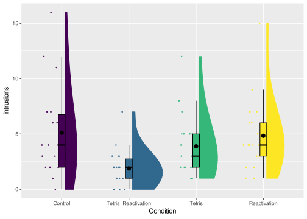

Chapter 6 Contrast coding and oneway ANOVA
There are several ways in which you can include nominal independent variables in the General Linear Model within R. The first option is to compute the contrast-coding predictors “by hand” and then enter these as metric predictors in the lm function. The second way is to specify the nominal variable as a factor and assign an appropriate contrast to this using the contrasts function. R will then compute the contrast-coding predictors to the factor “automatically” when you enter the factor as a predictor in the lm formula.
Finally, you can also use the aov (Analysis Of Variance) function, or the Anova function. These functions are more focussed on omnibus tests rather than tests of the individual contrasts.
We will discuss these options using the tetris2015 data, which comes with the sdamr package. There are many variables in this dataset (for a description, see ?tetris2015). The main variables used in the book are Days_One_to_Seven_Number_of_Intrusions (the number of memory intrusions after memory reactivation) and Condition. Let’s open the data and visualize the number of intrusions for the different conditions.
library(sdamr)
data("tetris2015")
## as the main DV has a cumbersome name, I'm creating a copy of the dataset
## with a new variable 'intrusions' which is a copy of Days_One_to_Seven_Number_of_Intrusions
dat <- tetris2015
dat$intrusions <- dat$Days_One_to_Seven_Number_of_Intrusions
set.seed(20201104) # to replicate figure with random jitter
plot_raincloud(dat, intrusions, groups = Condition)
6.1 Computing contrast-coding predictors
Let’s first focus on data from a subset of the conditions, namely the Tetris+Reactivation and Reactivation-Only condition
dat <- subset(dat, Condition %in% c("Tetris_Reactivation","Reactivation"))Note the use of the %in% operator. The statement Condition %in% c("Tetris_Ractivation","Reactivation") returns TRUE whenever the value of Condition is equal to one of the values in the vector c("Tetris_Ractivation","Reactivation"). This is shorthand to the equivalent statement
dat <- subset(dat, Condition == "Tetris_Reactivation" | Condition == "Reactivation")If there are lots of “or” values, using %in% can be a lot more efficient (in terms of the code you have to type, at least).
Say that we would like to use a dummy coded predictor, with the value of 0 for Tetris_Reactivation, and the value of 1 for Reactivation condition. One way to compute such a variable is as follows:
dat$dummy <- 0
dat$dummy[dat$Condition == "Reactivation"] <- 1The variable dummy is first being created as a new column in dat, by appending the name of the new variable to the data.frame with the usual “$” notation, and then assigning a value to it. On the second line, I then select a subset of the values of dat$dummy (all cases where dat$Condition == "Reactivation") and assign the different value 1 to this subset. A quick check using the table function shows that we now indeed have a new variable with values 1 and 0:
table(dat$dummy)##
## 0 1
## 18 18We can now use this dummy variable like any other (metric) predictor in a linear model.
mod <- lm(intrusions ~ dummy, data=dat)
summary(mod)##
## Call:
## lm(formula = intrusions ~ dummy, data = dat)
##
## Residuals:
## Min 1Q Median 3Q Max
## -3.8333 -1.8333 -0.8333 1.1111 10.1667
##
## Coefficients:
## Estimate Std. Error t value Pr(>|t|)
## (Intercept) 1.8889 0.6266 3.015 0.00484 **
## dummy 2.9444 0.8861 3.323 0.00214 **
## ---
## Signif. codes: 0 '***' 0.001 '**' 0.01 '*' 0.05 '.' 0.1 ' ' 1
##
## Residual standard error: 2.658 on 34 degrees of freedom
## Multiple R-squared: 0.2451, Adjusted R-squared: 0.2229
## F-statistic: 11.04 on 1 and 34 DF, p-value: 0.00214To compute other contrast-coding predictors, you can follow the same procedure. If a contrast-coding predictor only needs two values, then you can also use the ifelse function, which is a little less typing. The ifelse function has three arguments: a logical condition, the value to return when that condition is TRUE, and the value to return when that condition is FALSE. For instance, you can create a variable effect, with the value -.5 for Tetris_Reactivation and a value .5 for Reactivation, as
dat$effect <- ifelse(dat$Condition == "Reactivation",.5,-.5)Here, when dat$Condition == "Reactivation", the condition is TRUE, and hence the value .5 is returned, otherwise (when the condition is not true, so Condition != "Reactivation"), the value -.5 is returned. As before, we can enter this as a predictor in an linear model as usual:
mod <- lm(intrusions ~ effect, data=dat)
summary(mod)##
## Call:
## lm(formula = intrusions ~ effect, data = dat)
##
## Residuals:
## Min 1Q Median 3Q Max
## -3.8333 -1.8333 -0.8333 1.1111 10.1667
##
## Coefficients:
## Estimate Std. Error t value Pr(>|t|)
## (Intercept) 3.3611 0.4431 7.586 8.2e-09 ***
## effect 2.9444 0.8861 3.323 0.00214 **
## ---
## Signif. codes: 0 '***' 0.001 '**' 0.01 '*' 0.05 '.' 0.1 ' ' 1
##
## Residual standard error: 2.658 on 34 degrees of freedom
## Multiple R-squared: 0.2451, Adjusted R-squared: 0.2229
## F-statistic: 11.04 on 1 and 34 DF, p-value: 0.00214The procedure is easily extended to multiple contrast-coding predictors. For an example, let’s consider the full dataset with all four conditions.
dat <- tetris2015
dat$intrusions <- dat$Days_One_to_Seven_Number_of_IntrusionsSay that we want a set of orthogonal contrast codes
| \(c_1\) | \(c_2\) | \(c_3\) | |
|---|---|---|---|
Control |
\(\tfrac{3}{4}\) | 0 | 0 |
Tetris_Reactivation |
\(-\tfrac{1}{4}\) | \(-\tfrac{1}{3}\) | \(-\tfrac{1}{2}\) |
Tetris |
\(-\tfrac{1}{4}\) | \(\tfrac{2}{3}\) | 0 |
Reactivation |
\(-\tfrac{1}{4}\) | \(-\tfrac{1}{3}\) | \(\tfrac{1}{2}\) |
The first contrast code has only two values, so we can use ifelse. The second and third have three possible values, and then we can’t use that function.
# use ifelse
dat$c1 <- ifelse(dat$Condition == "Control", 3/4, -1/4)
# create c2 and c3 with default values and then use subsets for other values
dat$c2 <- 0
dat$c2[dat$Condition == "Tetris"] <- 2/3
dat$c2[dat$Condition %in% c("Tetris_Reactivation","Reactivation")] <- -1/3
# use sapply and switch
dat$c3 <- sapply(as.character(dat$Condition), switch,
"Control" = 0,
"Tetris_Reactivation" = -1/2,
"Tetris" = 0,
"Reactivation" = 1/2)When creating c3, I used a little R wizardry. The function sapply(X, FUN, ...) can be used to apply a function FUN to each element of a vector or list X. The argument X is that vector or list. As dat$Condition is a factor, but I want to use it as a character vector here, I’m using as.character to convert the factor in a character vector. The second argument FUN is the function you want to apply to the elements of X. I’m using the switch(EXPR, ...) function here. The sapply function will take each element in X and assign that to switch as the EXPR argument. Then any arguments specified as ... in the sapply function will be passed as additional arguments to the FUN function. In this case, what is specified under ... in the sapply function will be passed on to the ... argument of switch. For switch, the ... argument should be a list of alternative values of EXPR, with a corresponding return value. For instance, if EXPR == Control, the switch function will return 0. Using a combination of sapply and e.g. switch makes R a very powerful data manipulation tool. But the ins-and-outs of such applications will require practice. Alternatively, the dplyr package (which is part of the so-called tidyverse) has powerful functionality for data manipulation and data wrangling, which, with practice, are more straightforward to use than functions such as sapply in base R.
A main reason for showing you sapply here is to show you the flexibility of R. There are many ways to obtain the same result. Which way you find most intuitive is a personal judgement.
Getting back to the reason why we created the new variables in the first place, we can now use them as new predictors in a linear model
modg <- lm(intrusions ~ c1 + c2 + c3, data=dat)
summary(modg)##
## Call:
## lm(formula = intrusions ~ c1 + c2 + c3, data = dat)
##
## Residuals:
## Min 1Q Median 3Q Max
## -5.1111 -1.8889 -0.8333 1.1111 10.8889
##
## Coefficients:
## Estimate Std. Error t value Pr(>|t|)
## (Intercept) 3.9306 0.3743 10.502 7.11e-16 ***
## c1 1.5741 0.8643 1.821 0.073 .
## c2 0.5278 0.9168 0.576 0.567
## c3 2.9444 1.0586 2.781 0.007 **
## ---
## Signif. codes: 0 '***' 0.001 '**' 0.01 '*' 0.05 '.' 0.1 ' ' 1
##
## Residual standard error: 3.176 on 68 degrees of freedom
## Multiple R-squared: 0.1434, Adjusted R-squared: 0.1056
## F-statistic: 3.795 on 3 and 68 DF, p-value: 0.01409We can also obtain the equivalent \(F\) tests through the Anova function in the car package
car::Anova(modg, type=3)## Anova Table (Type III tests)
##
## Response: intrusions
## Sum Sq Df F value Pr(>F)
## (Intercept) 1112.35 1 110.2886 7.108e-16 ***
## c1 33.45 1 3.3165 0.072989 .
## c2 3.34 1 0.3314 0.566727
## c3 78.03 1 7.7364 0.006996 **
## Residuals 685.83 68
## ---
## Signif. codes: 0 '***' 0.001 '**' 0.01 '*' 0.05 '.' 0.1 ' ' 1To obtain an omnibus test for Condition (i.e. a test that all these slopes in modg are equal to 0), we can create a suitable intercept-only MODEL R and perform a model comparison as follows:
modr <- lm(intrusions ~ 1, data=dat)
anova(modr, modg)## Analysis of Variance Table
##
## Model 1: intrusions ~ 1
## Model 2: intrusions ~ c1 + c2 + c3
## Res.Df RSS Df Sum of Sq F Pr(>F)
## 1 71 800.65
## 2 68 685.83 3 114.82 3.7948 0.01409 *
## ---
## Signif. codes: 0 '***' 0.001 '**' 0.01 '*' 0.05 '.' 0.1 ' ' 1Note that the results of this model comparison were already provided in the output of summary(modg).
6.2 Assigning contrasts to factors
Creating new variables in a dataset yourself gives you full control, but it can also be a bit cumbersome. Luckily, R has functionality build-in to assign contrasts to nominal variables. These nominal variables with associated contrast codes are factors. In the tetris2015 dataset, the Condition column is already a factor. In other datasets, a nominal variable might be a character vector. You would then first need to turn this into a factor by calling e.g.
# This would be useful if dat$Condition is a character vector
# it is not needed here!
dat$Condition <- as.factor(dat$Condition)Factors have contrast codes associated to them. In R, the default contrast code is dummy coding. You can view (and set) the contrasts via the contrasts() function. First, let’s have a look at what the contrast for dat$Condition looks like:
contrasts(dat$Condition)## Tetris_Reactivation Tetris Reactivation
## Control 0 0 0
## Tetris_Reactivation 1 0 0
## Tetris 0 1 0
## Reactivation 0 0 1The contrast is a matrix with each column representing a contrast code, and each row a level of the nominal variable. Remember, when there are four levels, we need three contrast codes. The default dummy coding uses the first level as the reference group, and then each contrast code represents a comparison of a later level to the reference level.
You can choose your own contrast codes by assigning a matrix with contrast-code values to e.g. contrasts(dat$Condition). For instance, we can use the orthogonal contrast code defined earlier. In the code below, I first create the contrast matrix by combining columns with the cbind() function. You can give the columns names you find intuitive with the colnames function.
codes <- cbind(c(3/4,-1/4,-1/4,-1/4),
c(0, -1/3, 2/3,-1/3),
c(0, -1/2, 0, 1/2))
colnames(codes) <- c("ctrl-vs-other","tetr-vs-memory", "react-vs-t+r")
contrasts(dat$Condition) <- codesWhen we now call contrasts again, we can see are new contrast codes:
contrasts(dat$Condition)## ctrl-vs-other tetr-vs-memory react-vs-t+r
## Control 0.75 0.0000000 0.0
## Tetris_Reactivation -0.25 -0.3333333 -0.5
## Tetris -0.25 0.6666667 0.0
## Reactivation -0.25 -0.3333333 0.5A nice thing about the lm function is that you can also supply factors as predictors directly. Internally, the lm function will then create the necessary contrast-coding predictors from the contrasts supplied to the factor. Let’s try this:
modg <- lm(intrusions ~ Condition, data=dat)
summary(modg)##
## Call:
## lm(formula = intrusions ~ Condition, data = dat)
##
## Residuals:
## Min 1Q Median 3Q Max
## -5.1111 -1.8889 -0.8333 1.1111 10.8889
##
## Coefficients:
## Estimate Std. Error t value Pr(>|t|)
## (Intercept) 3.9306 0.3743 10.502 7.11e-16 ***
## Conditionctrl-vs-other 1.5741 0.8643 1.821 0.073 .
## Conditiontetr-vs-memory 0.5278 0.9168 0.576 0.567
## Conditionreact-vs-t+r 2.9444 1.0586 2.781 0.007 **
## ---
## Signif. codes: 0 '***' 0.001 '**' 0.01 '*' 0.05 '.' 0.1 ' ' 1
##
## Residual standard error: 3.176 on 68 degrees of freedom
## Multiple R-squared: 0.1434, Adjusted R-squared: 0.1056
## F-statistic: 3.795 on 3 and 68 DF, p-value: 0.01409You can see that the output (apart from the names of the effects) is exactly the same as when we created c1, c2, and c3. So that’s pretty neat!
As I said, the lm function will create the contrast-coding predictors for factors. You can view the resulting “design matrix” (the matrix with values for all predictors actually used when estimating the parameters) with the model.matrix function (as the output is rather long, I’m calling this within the head function to only show the first few rows)
head(model.matrix(modg))## (Intercept) Conditionctrl-vs-other Conditiontetr-vs-memory Conditionreact-vs-t+r
## 1 1 0.75 0 0
## 2 1 0.75 0 0
## 3 1 0.75 0 0
## 4 1 0.75 0 0
## 5 1 0.75 0 0
## 6 1 0.75 0 0As you can see, the design matrix also includes a column for the intercept. The value of this column is 1 for every case in the data. If you think about it, you can view the intercept as the slope of a predictor variable which always has the value 1: \[\beta_0 = \beta_0 \times 1\]
6.2.1 Default coding schemes
In addition to assigning your own contrast codes, there are functions to create several “default” coding matrices. These are
contr.treatment: dummy coding.contr.sum: effect-coding (sum-to-zero)contr.helmert: orthogonal contrast codes comparing each level of a factor to all levels before it.contr.poly: orthogonal contrast codes, usually used for ordinal levels.
You can call each of these functions by specifying how many levels the factor has. E.g. for our Condition factor with four levels, the output of these functions is
contr.treatment(4)## 2 3 4
## 1 0 0 0
## 2 1 0 0
## 3 0 1 0
## 4 0 0 1contr.sum(4)## [,1] [,2] [,3]
## 1 1 0 0
## 2 0 1 0
## 3 0 0 1
## 4 -1 -1 -1contr.helmert(4)## [,1] [,2] [,3]
## 1 -1 -1 -1
## 2 1 -1 -1
## 3 0 2 -1
## 4 0 0 3contr.poly(4)## .L .Q .C
## [1,] -0.6708204 0.5 -0.2236068
## [2,] -0.2236068 -0.5 0.6708204
## [3,] 0.2236068 -0.5 -0.6708204
## [4,] 0.6708204 0.5 0.2236068When you look at the output of these functions, you might notice that the scale of each can be different. For instance, in the contr.helmert function, the difference between the highest and lowest value ranges from 2 to 4. In the book, I used values such that a one-unit increase on a contrast-coding predictor reflects a difference between conditions. This convention is not followed in the various contr. functions. If you want default contrast coding schemes which follow this convention, making the parameters of the model a little easier to interpret, you can use the various contrast coding schemes implemented in the codingMatrices package (Venables 2021). this package also implements several other default coding schemes not implemented in the stats package. Instead of contr., this package provides contrast codes through function names starting with code_. For example, you can obtain a Helmert contrast with a different scaling as follows:
library(codingMatrices)
code_helmert(4)## H2 H3 H4
## 1 -0.5 -0.3333333 -0.25
## 2 0.5 -0.3333333 -0.25
## 3 0.0 0.6666667 -0.25
## 4 0.0 0.0000000 0.75Another nice feature of the codingMatrices package is the mean_contrasts() function, which will show you how the intercept of the resulting model is related to the group means, and how the slope of each contrast-coding predictor is a function of the group means. For instance
mean_contrasts(code_helmert(4))## m1 m2 m3 m4
## Ave 1/4 1/4 1/4 1/4
## H2 -1 1 . .
## H3 -1/2 -1/2 1 .
## H4 -1/3 -1/3 -1/3 1shows you in the row labelled Ave that the intercept is the sum of each group mean (in the columns) multiplied by \(\tfrac{1}{4}\); i.e. it is the average of averages. The next row (labelled H2) shows you how the slope of the first contrast-coding predictor can be computed from the group means (as the difference between the second mean and the first mean). By contrast, the contr.helmert() function will provide the same intercept, but slopes that are fractions of these differences
mean_contrasts(contr.helmert(4))## m1 m2 m3 m4
## Ave 1/4 1/4 1/4 1/4
## -1/2 1/2 . .
## -1/6 -1/6 1/3 .
## -1/12 -1/12 -1/12 1/4